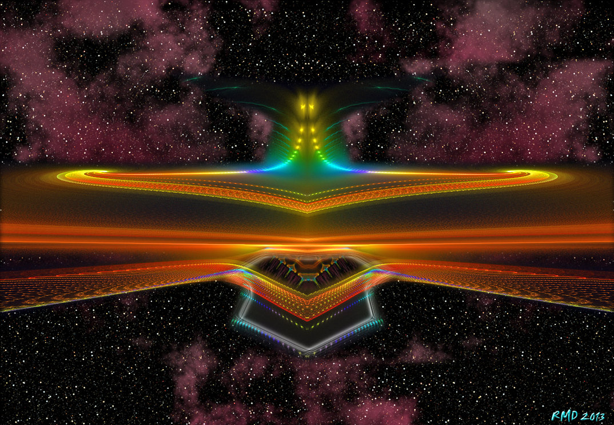

1 В ожидании трансформации
Я подошла к тому моменту, когда нужно сделать выбор. Нет промежуточных состояний - есть только или-или. Я подошла к краю. Неужели это край? Я не могу уйти от этого выбора, могу его только ненадолго отложить. Мне еще надо завершить кое-какие дела.
Мысль о трансформации меня пугает. Почему мысли о метаморфозе непосредственно связаны с мыслями о смерти? Это алхимическая смерть - переход из темноты нигредо в сияние альбедо? Стану ли я собой, настоящей, или существом, которое абсолютно чуждо мне нынешней? Перед тем, как стать иным существом, напоследок, хочу побыть кометой. "Дхарма" кометы - молнеиносно пролететь и сгореть, ничего не оставив. Ничего ли? А свет? А музыка.. Музыка! А существа снов - они пишут музыку? Это люди, со всеми их переживаниями, горениями, мыслями создают внутри себя котел, в котором все бурлит, переваривается, будоражится... и из всех этих пустяшных, никчемных ингредиентов порой рождается... откровение. А существа снов.. способны ли они на такой "большой взрыв", из которого рождается Лунная соната или Лакримоса? Если сделаю этот шаг, стану одной из них... буду ли я способна пережить "зарождение большого взрыва", новой музыки или цвета? Пусть даже по человеческим меркам это будет пустышка, ничто, это не важно, важен тот самый момент откровения. Откровения, которое приближает к Истине, секунда, один шаг, но этот шаг больше тех шагов, которые можешь сделать за тысячу лет. Вихрь и буря на месте отстраненности, горение на месте бережливого покоя, откровение на месте оцепенения... Или я просто боюсь последнего шага?
Кем я стану? Изменюсь ли я в человеческом мире? Исчезну ли? Или стану бледной проекцией? Есть ли другие дороги? Или этот выбор был неизбежен с самого начала?
Пусть даже я получу ту силу, которую ищу. Но чем я за это заплачу? А может, это всего лишь страх "возвращаться в колесо"? Не желаю возвращаться, терять свою сущность, забывать. Слишком мучительно я вспоминаю, чтобы вновь забывать... Готова ли я пожертвовать своей нынешней природой ради нескольких тысяч лет силы, знания и памяти, а проще говоря - ради сохранения своей сущности, которая чувствует, что по земным меркам ей остается несколько жалких десятков лет?
Почему живые существа мучаются? Дух - это мышца. А мышцу накачивать надо, в каждом виде спорта все равно приходится идти через преодоление. Потому, что воля - это мышца. И просто так, в благости, она не закаляется. Так может, нам всем сделан великий подарок.. от которого многие всячески стремятся отделаться и прийти к гармонии? А гармония-то, может - это то самое масло, которое взбивает лягушка, чтобы выбраться из молока? Пока не выдержишь свой путь, не будет тебе гармонии. Зачем спрашивается, идти чужим путем, искать нирвану, растворение в свете, если сердцу ближе что-то другое? Кто сказал, что самые легкие фракции в перегонке нефти самые ценные? Ведь все же нужны! Все!
А может, я готова стать кем и чем угодно, чтобы только не возвращаться в это колесо, не терять память - ведь это же непозволительная растрата!
Как будет происходить трансформация? Посредством внутренней воли и намерения? Будет ли "помощь"? Будет зеркало?
Что отталкивает от выбора? Какие-то предрассудки вроде некого мифического "договора". Зачем договор если, ты сам проделываешь всю работу, сам решаешься и сам ступаешь на этот путь. А то уже желудок выворачивается наизнанку при мысли о шариковой ручке, аккуратненько заправленной кровью. Где точка невозврата?
Нельзя вечно "стоять на границе". Надо делать выбор. И пусть! Ай, была ни была.
